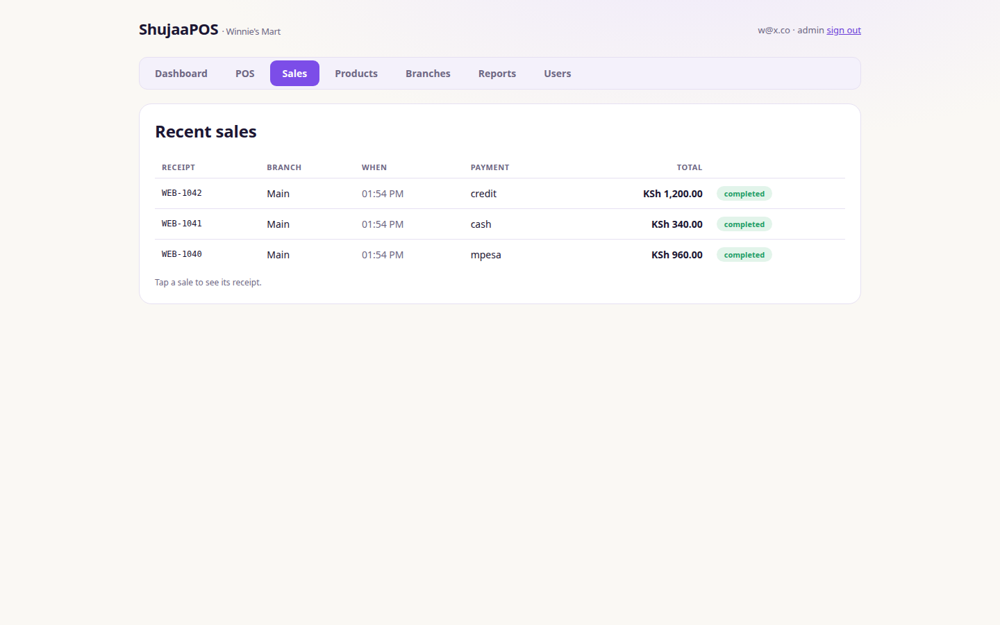

Split Payments: Cash, M-Pesa and Card on One Sale
ShujaaPOS · November 2026 · 4 min read
A customer owes KSh 850. They have KSh 500 in cash and the rest on M-Pesa. This happens dozens of times a day in a Kenyan shop, and it's where end-of-day maths quietly goes wrong if your till records one payment method per sale.

Why single-method recording breaks
If that KSh 850 sale goes down as "cash" only, your cash count is short by 350 at close. If it goes down as "M-Pesa", your M-Pesa statement won't match the ledger. Either way you're reconciling phantom gaps at 9pm.
The correct habit
Record each payment as its own line: KSh 500 cash, KSh 350 M-Pesa, against the same sale. Then every drawer count and every M-Pesa statement checks out independently, and the sale total still equals what the customer owed.
In ShujaaPOS specifically
The charge screen takes a payment method and amount per row. Tap + Split payment and a second row appears, already filled with the remaining balance. Methods are cash, M-Pesa, card and credit. The footer shows "Remaining" until the sale is covered, then "Change" if cash was overpaid. Each method lands in the payments ledger separately, so the reconciliation above actually works.
Edge cases worth knowing
- Partial credit. KSh 500 cash now, KSh 350 on the customer's account. Record the credit portion as a credit payment line; the customer record keeps the trail.
- Overpayment. If cash exceeds the bill, change is computed on the total tendered, not per method.
- Refunds. Refund through the same split if that's how the customer wants it back.
Try ShujaaPOS free